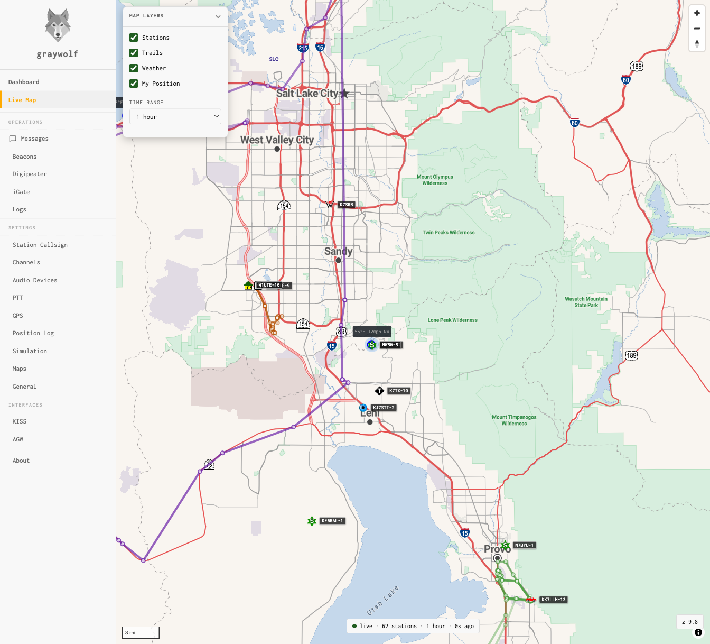

Live Map
Real-time APRS station map with trails, weather, and APRS-IS overlay
The live map plots APRS stations on an interactive OpenStreetMap view as they’re heard on RF or received from APRS-IS. It polls the station cache with delta updates, so the map stays current without heavy page reloads. Stations are displayed with their standard APRS symbols and callsign labels.

Layer Controls
The layer panel (top-left, below the zoom controls) lets you toggle what’s displayed on the map:
| Layer | Description |
|---|---|
| Stations | APRS station markers with standard symbol icons and callsign labels. Click a marker to see position, path, comment, and heard-via details. |
| APRS-IS | Stations received from the APRS-IS network (not heard directly on RF). Toggle off to see only locally-heard stations. |
| Trails | Polyline trails showing the recent movement path of mobile stations. |
| Weather | Weather data labels (temperature, wind) for stations reporting weather telemetry. |
| My Position | Your station’s position marker, sourced from the GPS cache or your last beacon. |
On mobile devices, the layer panel collapses to a button to save screen space. Tap the layers icon to expand it.
Time Range
The dropdown in the top-right corner controls how far back the map looks for station data. Stations not heard within the selected window are automatically pruned from the map.
| 1 hour | Default. Shows recently-active stations only. |
| 2 hours | Wider window for less-active areas. |
| 4–24 hours | Extended ranges (requires persistent station storage). |
Station Popups
Click any station marker to see a popup with detailed information:
- Callsign and APRS symbol
- Position — latitude, longitude, altitude, and Maidenhead grid square
- Heard via — RF direct, RF via digipeaters (with hop count), or APRS-IS
- Digipeater path — the full path the packet traversed
- Comment — the station’s comment field
- Last heard — how recently the station was heard
Status Bar
The status bar at the bottom center of the map shows:
- Connection status — green dot for live polling, yellow for backoff/retry, red for error
- Station count — number of stations currently on the map
- Time range — the active time window
- Last fetch — seconds since the last successful data poll
Coordinate Display
The bottom-right corner shows coordinates and the Maidenhead grid locator for the current cursor position (desktop) or map center (mobile).